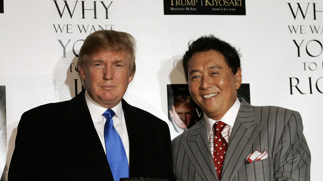

哈皮JON
专注于时事背后的故事
羅伯特·清崎：经济刺激政策只让富人受惠
Apr 4, 2020
富人经济刺激政策
在美国经济刺激推出后的第一天，羅伯特·清崎评击该政策不但没有起到保护穷人和中产阶级的效用而是一个保护富人资产的政策。在他个人Instagram社交网站的影片中，他提到人们总爱把关注里放在好消息上并忽略事情坏的那一面并提到认识坏的一面的重要性。他举例，经济刺激政策就像给人一条鱼而不是教人如何钓鱼，结果另一天你还是需要再给市场另一条鱼以维持经济运转。
保护底层人民的经济刺激政策
羅伯特·清崎说经济刺激政策最终只会让富人受惠，印更多的美元去支撑资本市场的价格好让富人的投资得以套现。他称美联储（FED）是一个国际的犯罪集团假用保护经济的名义实施政策，实则银行家们才政策的最大的受益人。最终，底层人民与中产阶级不但无法受惠还将会受到经济进一步恶化的打击。这将给中小型企业的倒闭潮与不断飙升的失业率带来更坏的影响。
无止境印钱即使加快经济崩溃
大量美金将注入市场同时打击美元的价值，羅伯特·清崎提到债务国内生产总值比(Debt to GDP ratio)已达到了150%的水平。他预期美国经济将迎来经济衰退和恶性通货膨胀。在商品价格不断爬升的情况下，人民将争先恐后的用不断贬值的美元来换取物资最终导致经济危机。
谁是羅伯特·清崎?
他是一位国际知名的财务教育讲师同时也饱受争议，著有穷爸爸富爸爸一书。书中用生动的例子讲诉他的两位爸爸，一位教育程度高却终身为钱财而烦恼的穷爸爸和另一位没受过高等教育但却事业有成的富爸爸，所传授给他完全相反的财务知识。有人评击此书中富爸爸事实上从不存在，而羅伯特·清崎也从未给与解释。他大部分的财富来自于房产投资和财务教育业务尤其是穷爸爸富爸爸系列书籍。在影片结束前他不忘提醒人们财务智商的重要性，并鼓励去购买金钱流游戏以体验其中的奥妙。